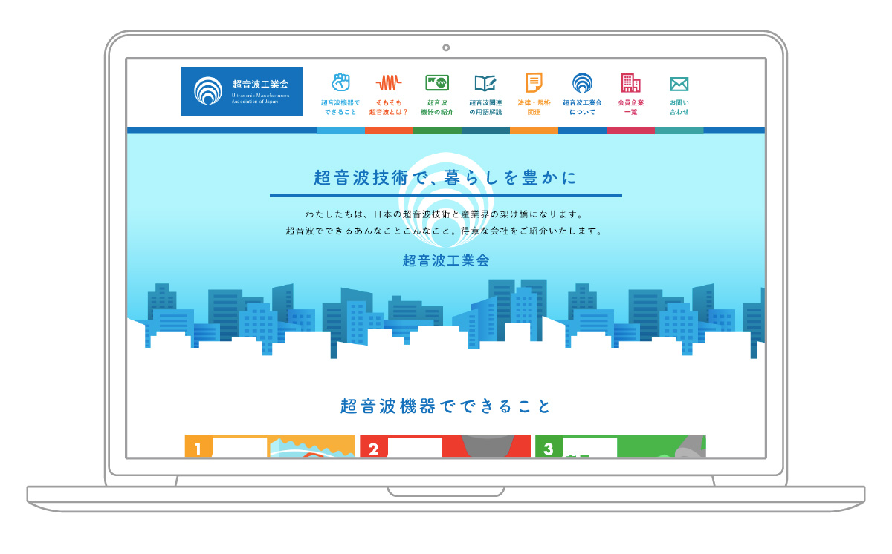
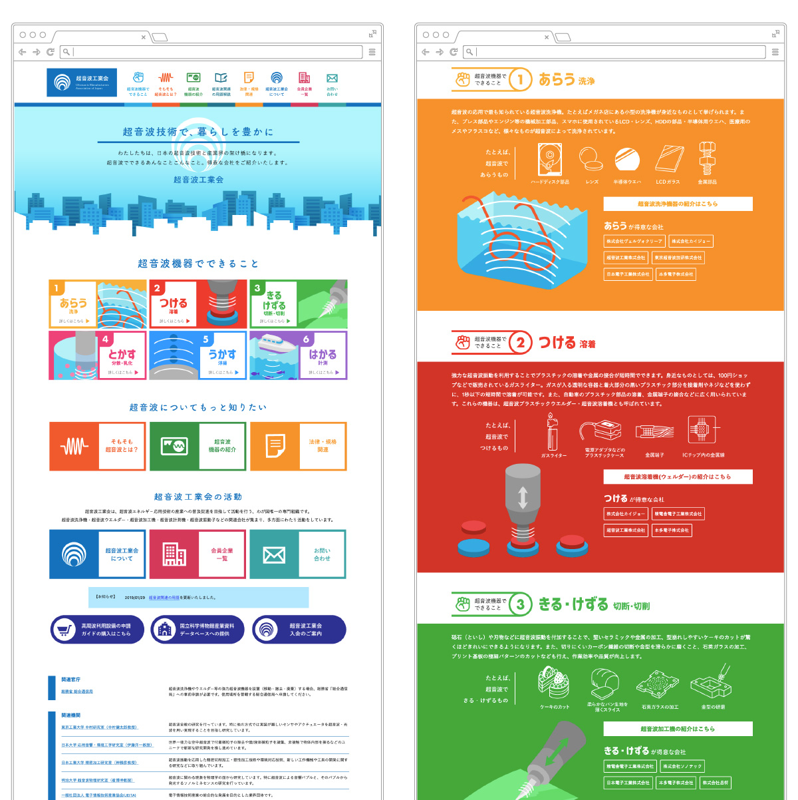
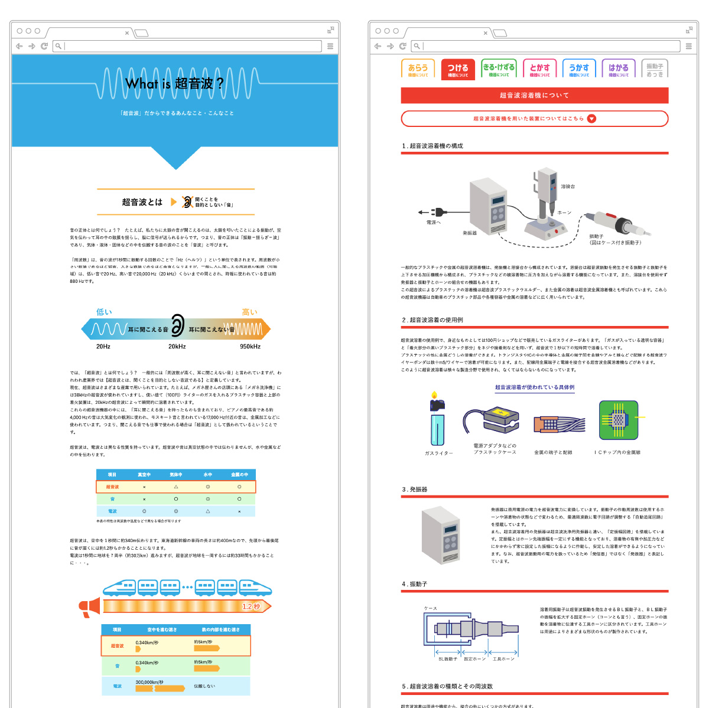
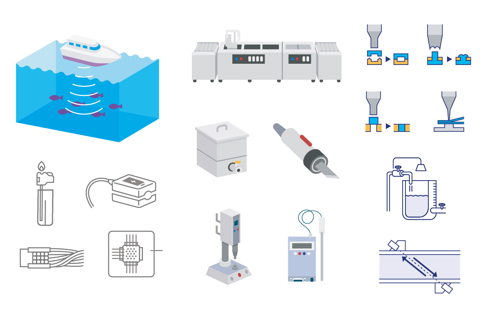

超音波工業会
ウェブサイト / イラスト
2018. 12




2018. 12
超音波機器を製造・販売する企業たちが集まる組織、「超音波工業会」のwebサイト。
会員企業を紹介すると共に、それぞれの企業が何が得意なのかを明記するため、超音波や超音波機器の基礎知識の説明が必要になりました。また、超音波機器は、基本的にほとんどが納品先に合わせた社外秘の特注品のため写真が使えないためにイラストを多用することから、あえて製造系のきっちりとした雰囲気から一線を画す、親しみやすい雰囲気で描画し、カラフルに構成。イラストの他にも同系統のインフォグラフィックを配置しました。
＜ BACK
© Moeri Ito